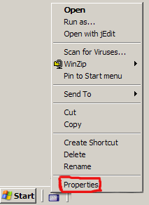
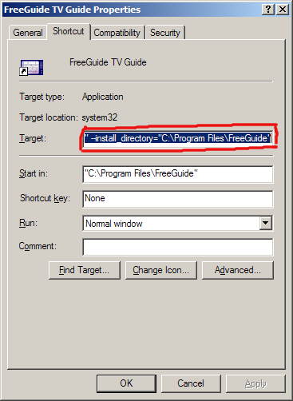

FreeGuide
FreeGuide| FreeGuide |
FAQ »
Change Time Zone |
|
|
The time seems to be wrong - how can I fix it?If, when you click Go to now FreeGuide scrolls to a time which is not now, you know FreeGuide is wrong about the time. Note: if FreeGuide goes to the right time when you click Go to now, but your TV programmes are listed as being at the wrong time, that is a slightly different problem. You can probably fix it by Setting The TZ Environment Variable.
If FreeGuide is wrong about the time, it is probably because it doesn't know what time zone you are in. First you will need to find out the name of your time zone. This site might help: http://www.timezoneconverter.com/cgi-bin/findzone/findzone.tzc. Examples are "Europe/London", "US/Pacific", "Africa/Algiers". How you tell FreeGuide your time zone depends on what operating system you are using: Linux, FreeBSD, etc.Create a file in your home directory called ".freeguiderc", and make it look like this:
(Except replace "Europe/Paris" with your time zone name.)
When you've made this change, FreeGuide should know the correct time. If not, please Contact Us and we'll try and work out why not. Windows

C:\WINDOWS\system32\javaw.exe -jar "C:\Program Files\FreeGuide\startup.jar" --doc_directory="C:\Program Files\FreeGuide\doc" --install_directory="C:\Program Files\FreeGuide"

-Duser.timezone=Europe/Paris
(Except replace "Europe/Paris" with your time zone name.)
C:\WINDOWS\system32\javaw.exe -Duser.timezone=Europe/Paris -jar "C:\Program Files\FreeGuide\startup.jar" --doc_directory="C:\Program Files\FreeGuide\doc" --install_directory="C:\Program Files\FreeGuide"
When you've made this change, FreeGuide should know the correct time. If not, please Contact Us and we'll try and work out why not. |
| If you would like to help improve this site, please Contact Us and we will give you the password to edit pages. | |
| Page last modified on June 10, 2008, at 06:50 PM PmWiki Info | - - - () - |